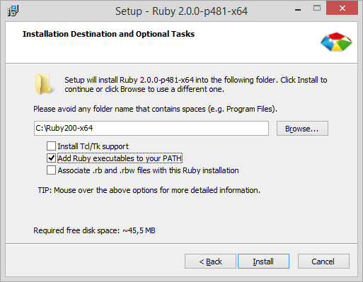

Ruby is the programming language that Jekyll is written in. You’ll need to install Ruby and the corresponding DevKit, which is needed to build some of Jekyll’s dependencies as “native extensions”.
First, click on the link below and download the installer for Ruby v2.0.0 that matches your system’s architecture (x86 / x64).
Get Ruby for Windows
Execute the installer and go through the steps of the installation. When you get to the screen below, make sure to check the “Add Ruby executables to your PATH” box.
Click Install and Ruby will be installed within seconds.
Jekyll has some dependencies which, out of the box, only provide raw source code. To make them into fully functional executables, you’ll probably need to install the Development Kit.
Click the link below and download the DevKit archive that corresponds to your Ruby installation and system architecture. For Ruby v2.0.0, the file name will begin with DevKit-mingw64. Choose the 32bits or 64bits version depending on your system.
Get Ruby DevKit
The download is a self-extracting archive. When you execute the file, it’ll ask you for a destination for the files. Enter a path that has no spaces in it. We recommend something simple, like C:\RubyDevKit\. Click Extract and wait until the process is finished.
Next, you need to initialize the DevKit and bind it to your Ruby installation. Open your favorite command line tool and navigate to the folder you extracted the DevKit into.
cd C:\RubyDevKit
Auto-detect Ruby installations and add them to a configuration file for the next step.
ruby dk.rb init
Install the DevKit, binding it to your Ruby installation.
ruby dk.rb install
That’s it! If all went well, you now have a working Ruby installation on your machine and you can build fully functional executables using the Ruby Development Kit. Ruby includes a way to install so-called gems—software packages that you can use from the command line. Jekyll is one of them! Click the button below to find out how you can successfully install it.